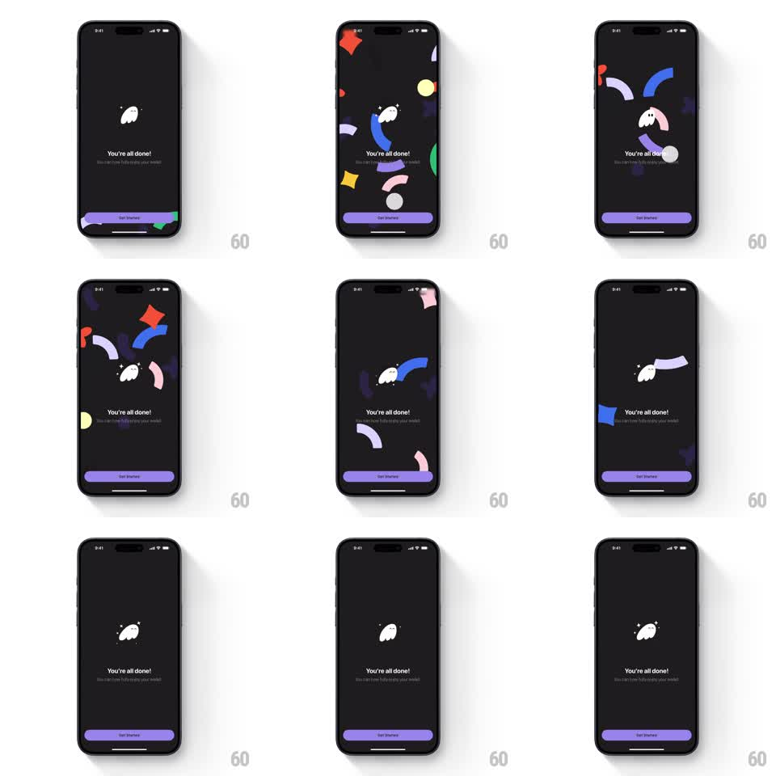

Media
Frame-by-frame

Rebuild this animation 1:1: Phantom's wallet-created success screen - the ghost mascot sits center on a dark screen while colorful geometric shapes explode outward from behind it, drift, and disperse, leaving the clean "You're all done!" state.

Rebuild this animation 1:1: Phantom's wallet-created success screen - the ghost mascot sits center on a dark screen while colorful geometric shapes explode outward from behind it, drift, and disperse, leaving the clean "You're all done!" state. ## Integration Integration: stack-agnostic spec - springs given as stiffness/damping, timed motions as duration + curve; map every value to your framework and animation library of choice. ## Scene Near-black screen: white ghost mascot with sparkles at center, headline "You're all done!" with subcopy, purple "Get Started" button pinned to the bottom safe area. ## Motion spec Pattern: celebratory shape explosion with settle. - Shapes (~10-14 pieces: stars, thick arcs, squiggles, circles in red, yellow, green, blue, purple, pink) erupt from behind the mascot in all directions (~500ms, ease-out), each on its own vector with rotation. - Peak coverage: shapes reach near screen edges, some partially clipped. - Then shapes drift gently (slow float, ~1s) and disperse off-screen or fade (400ms), returning focus to the mascot. - Mascot has a subtle continuous bob (translateY +/-4px, ~2s loop); headline and button are static after a one-time fade-in. ## Calibration - Explosion reads as one burst, not a staggered sequence - all shapes launch within ~100ms of each other. - The end state is clean: no leftover confetti clutter. ## Reduced motion Shapes fade in at low opacity behind the mascot, no explosion or drift. ## Don't miss - Shapes emerge from BEHIND the mascot (z-order), so the ghost stays the focal point. - The purple button is visible the whole time - shapes never cover it for long.